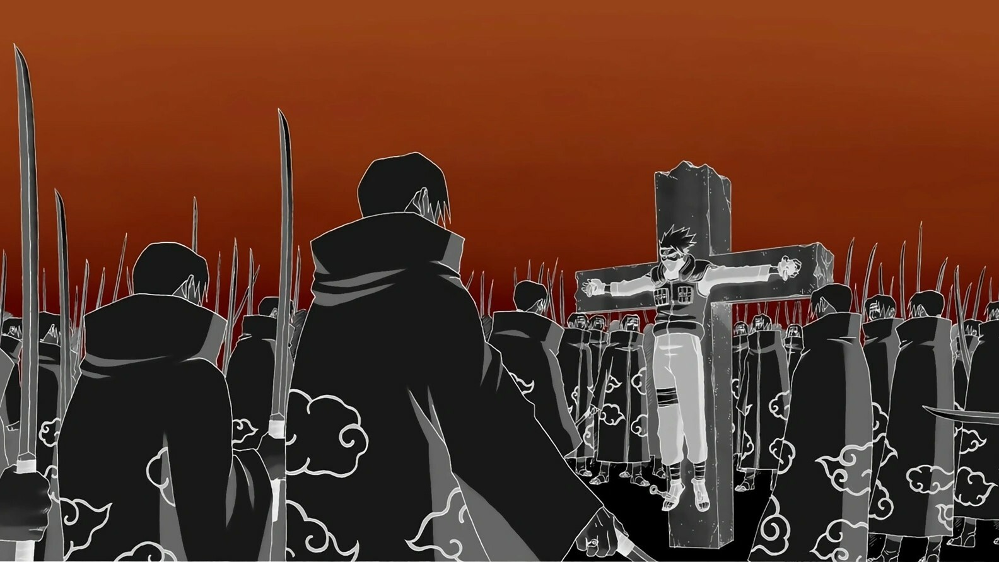

About Itachi
나뭇잎 마을의 천재 닌자이자 우치하 일족의 엘리트입니다. 겉으로는 차갑고 무자비해 보이지만, 사실은 누구보다 마을의 평화를 사랑하고 평생을 바쳐 동생을 지키고자 했던 따뜻하고 헌신적인 마음을 가진 캐릭터입니다. 비극적인 운명 속에서도 자신의 신념을 잃지 않았습니다.

이타치의 강력한 환술, '츠쿠요미'
Itachi's Characteristics
- 만화경 사륜안: 일족 특유의 눈인 사륜안을 개안하여, '츠쿠요미(환술)', '아마테라스(화둔)', '스사노오' 등 강력하고 다채로운 인술을 구사합니다.
- 천재적인 두뇌: 7세에 닌자 학교를 수석으로 졸업할 만큼 뛰어난 지능과 상황 판단력을 갖추고 있습니다.
- 깊은 동생 사랑: 동생인 사스케를 위해 기꺼이 모든 증오를 짊어지고 악역을 자처하는 헌신적인 인물입니다.
Itachi's Relationships
이타치의 삶에 큰 영향을 미친 주변 인물들입니다.
- 우치하 사스케: 이타치가 세상에서 가장 사랑하는 동생이자, 그가 살아가는 이유입니다.
- 우치하 시스이: 이타치의 가장 친한 친구이자 멘토로, 이타치에게 마을의 평화를 맡기고 눈을 감았습니다.
- 호시가키 키사메: 아카츠키에서 함께 활동한 파트너로, 이타치를 깊이 존중하고 따랐습니다.